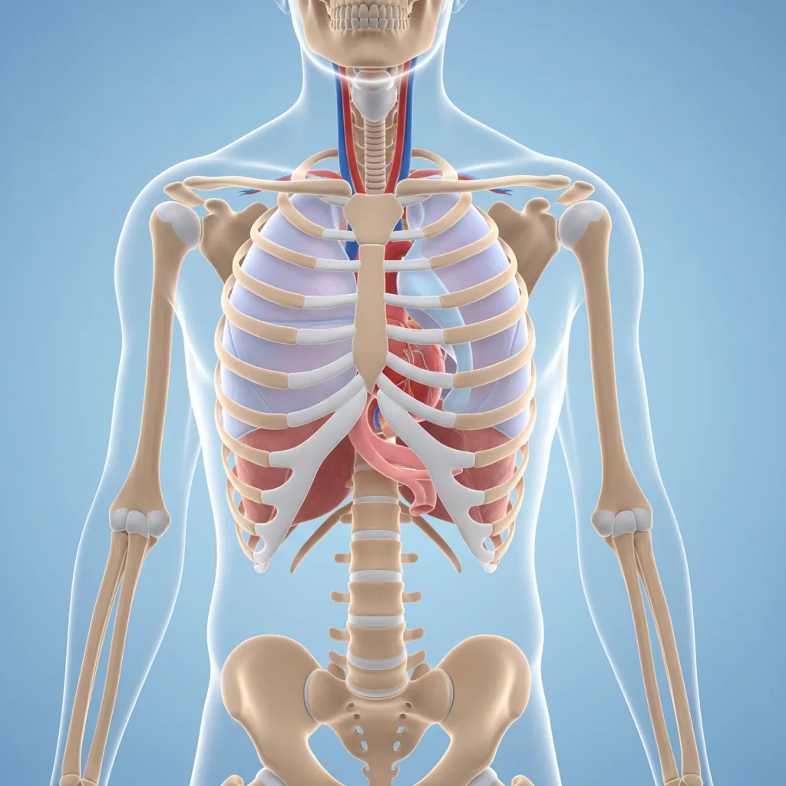
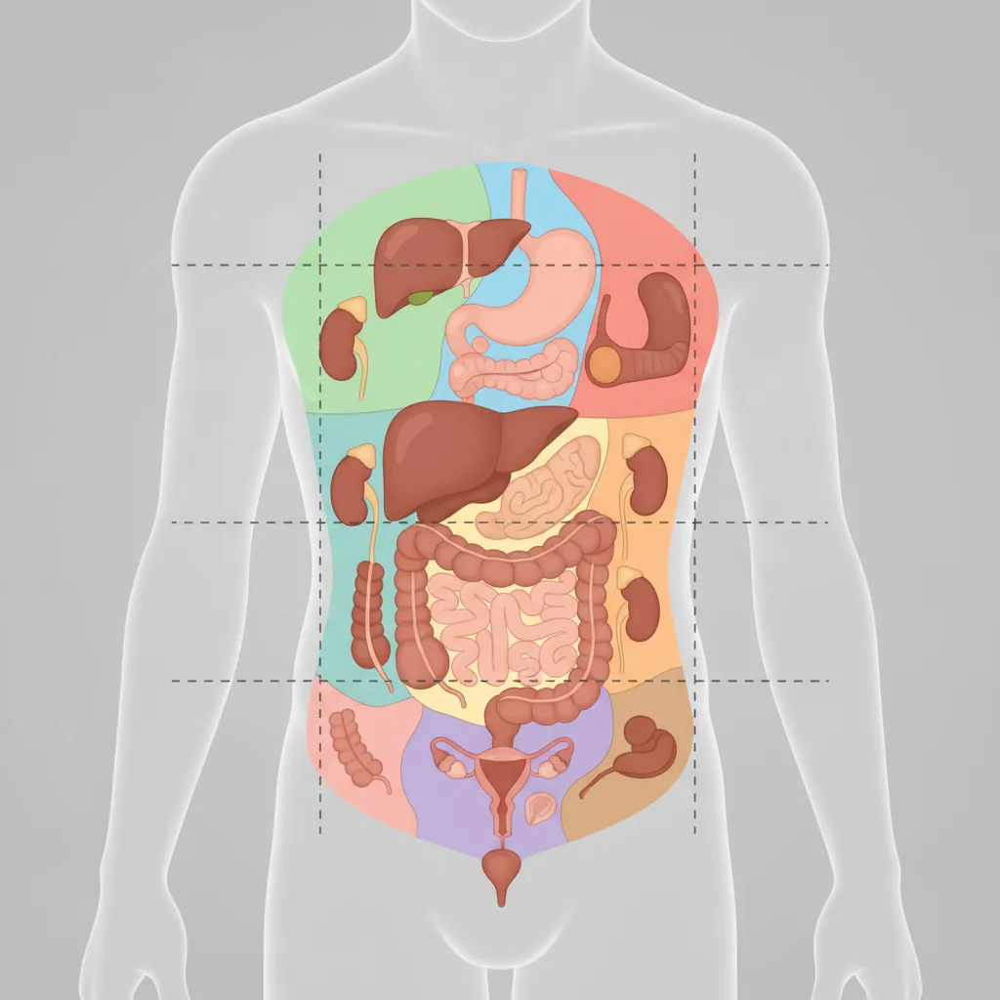
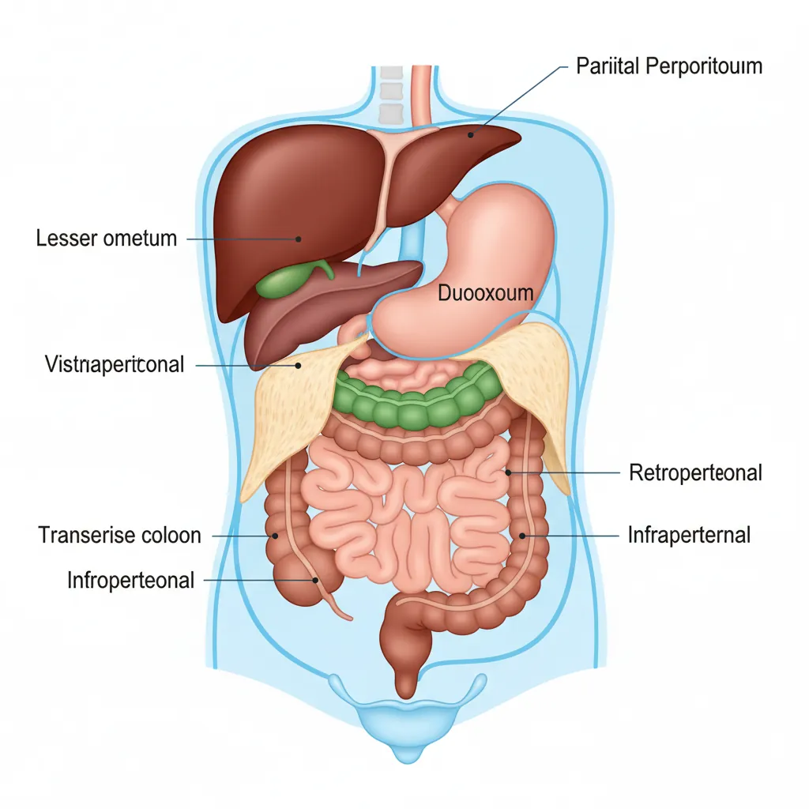
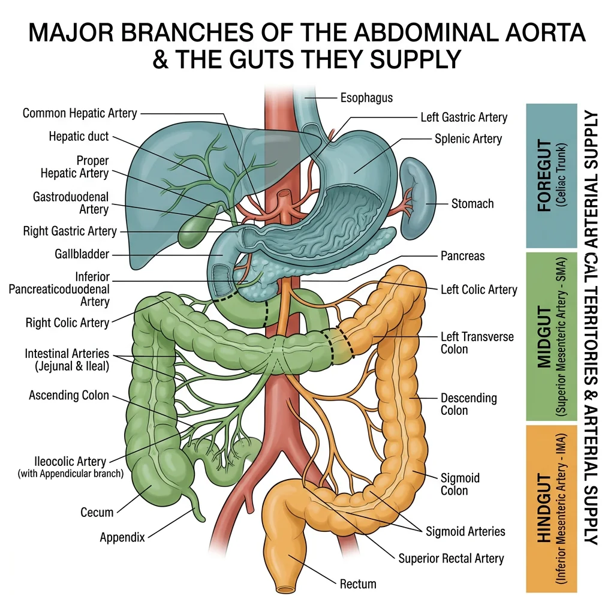
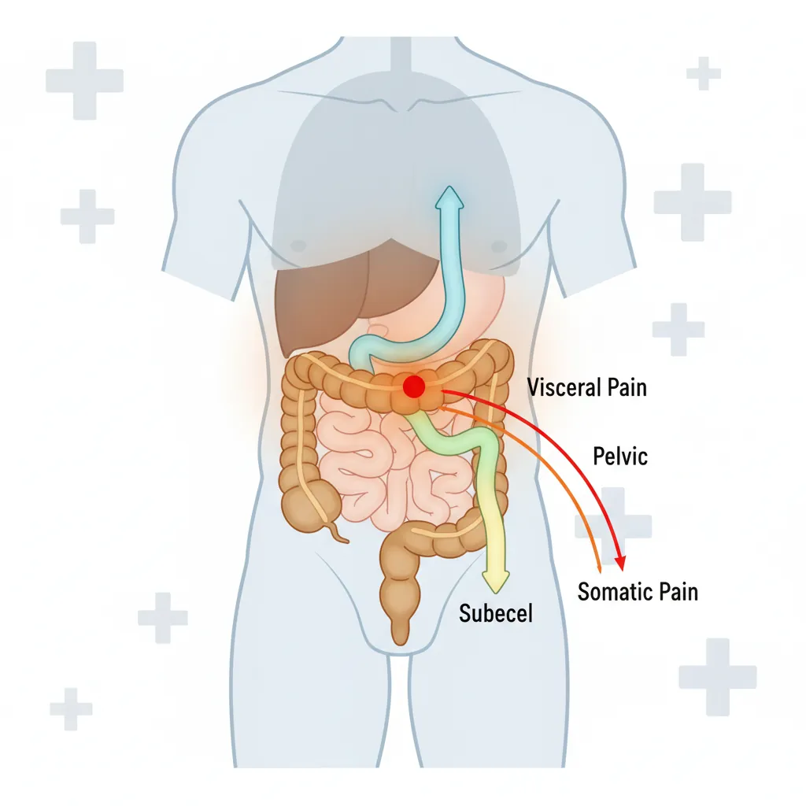
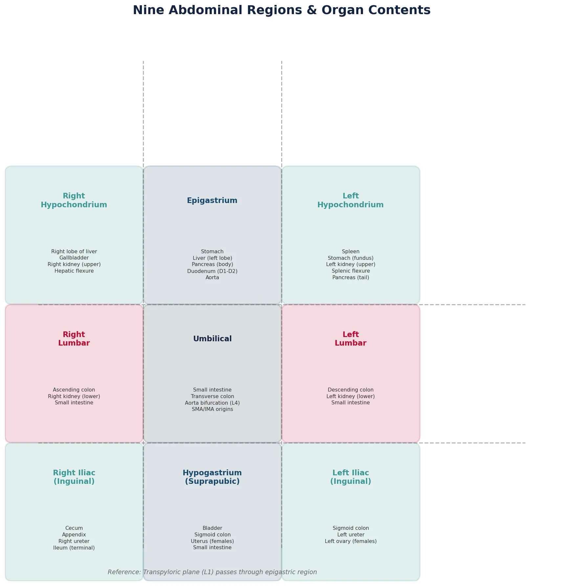

Human Anatomy Mastery
Anatomical Terminology & Body Planes
Directional terms, planes, cavities, tissuesSkeletal System & Joints
Osteology, axial & appendicular, arthrologyMuscular System & Movement
Muscle types, functional groups, biomechanicsCardiovascular & Lymphatic Anatomy
Heart, vessels, lymphatics, clinical linksNervous System & Neuroanatomy
CNS, PNS, autonomic, functional pathwaysVisceral Anatomy — Thorax & Abdomen
Thoracic & abdominal organs, peritoneumHead, Neck & Special Senses
Skull foramina, eye, ear, oral anatomySurface Anatomy & Clinical Imaging
Landmarks, X-ray, CT, MRI, proceduresHistology & Microscopic Anatomy
Cell ultrastructure, tissue & organ histologyEmbryology & Developmental Anatomy
Germ layers, organogenesis, malformationsFunctional & Applied Anatomy
Biomechanics, posture, gait, integrationRegional Dissection Mastery
Upper/lower limb, thorax, abdomen, pelvisThoracic Organs
The thorax houses the body's vital cardiopulmonary machinery within a protective bony cage formed by the ribs, sternum, and thoracic vertebrae. Understanding thoracic visceral anatomy is essential for interpreting chest X-rays, performing procedures like thoracentesis, and managing emergencies from pneumothorax to cardiac tamponade. In this section, we progress from surface structures inward — lungs and pleura, mediastinal compartments, and the midline conduits (esophagus and trachea).

Lungs & Pleura
The lungs are paired organs of respiration occupying most of the thoracic cavity. Each lung is conical, with an apex projecting above the first rib into the root of the neck and a concave base resting on the diaphragm.
Lobes & Fissures
The right lung has three lobes (upper, middle, lower) separated by the oblique and horizontal fissures. The left lung has two lobes (upper and lower) separated by a single oblique fissure, plus the lingula — a tongue-like projection of the upper lobe that is the anatomical equivalent of the right middle lobe.
Root & Hilum
The hilum (plural: hila) is the area on the medial surface where structures enter and leave the lung. The lung root contains the main bronchus, pulmonary artery, two pulmonary veins, bronchial vessels, lymphatics, and nerves, all wrapped by a sleeve of pleura.
A critical anatomical difference: on the right side, the bronchus is eparterial — the upper lobe bronchus branches before the pulmonary artery crosses. On the left side, the artery arches over the bronchus (hyparterial). This distinction matters during bronchoscopy and thoracic surgery.
Bronchopulmonary Segments
Each lobe is further divided into bronchopulmonary segments — functionally independent units each supplied by a segmental bronchus and a segmental branch of the pulmonary artery. There are 10 segments on the right and 8–10 on the left. These segments are the smallest units that can be surgically resected (segmentectomy), preserving maximum healthy lung tissue.
Pleural Anatomy
The pleura is a serous membrane with two layers:
- Visceral pleura — intimately adherent to the lung surface, extending into fissures; insensitive to pain (receives only autonomic innervation)
- Parietal pleura — lines the inner thoracic wall and is divided into costal, mediastinal, diaphragmatic, and cervical parts; sensitive to pain via intercostal and phrenic nerves
Between these layers lies the pleural cavity, containing a thin film (~15 mL) of serous fluid that reduces friction during respiration. The costodiaphragmatic recess is the deepest part of the pleural cavity where costal and diaphragmatic pleurae meet — a critical site for pleural effusions and thoracentesis.
Tension Pneumothorax
A 24-year-old motorcyclist is brought to the emergency department after a collision. He is tachycardic, hypotensive, and has absent breath sounds on the left side with tracheal deviation to the right. A tension pneumothorax is diagnosed — air entering the pleural cavity through a one-way valve mechanism, causing progressive lung collapse and mediastinal shift. Emergency needle decompression at the 2nd intercostal space, midclavicular line, followed by chest tube insertion at the 5th intercostal space, anterior axillary line (the "safe triangle") is performed.
Anatomical basis: Understanding pleural anatomy, intercostal neurovascular bundles (running beneath each rib — needle inserted above the rib below to avoid them), and surface landmarks guides these life-saving procedures.
Surface Markings of the Pleura & Lungs
The pleural reflections and lung borders follow predictable surface landmarks:
| Structure | Right Side | Left Side |
|---|---|---|
| Apex | 2.5 cm above medial 1/3 of clavicle | 2.5 cm above medial 1/3 of clavicle |
| Anterior border | Straight down from sternoclavicular joint to 6th costal cartilage | Deviates laterally at 4th costal cartilage (cardiac notch) |
| Inferior lung border | 6th rib (MCL), 8th rib (MAL), 10th rib (scapular line) | Same as right |
| Inferior pleural border | 8th rib (MCL), 10th rib (MAL), 12th rib (scapular line) | Same as right |
| Oblique fissure | T3 spinous process → 6th costochondral junction | T3 spinous process → 6th costochondral junction |
| Horizontal fissure | 4th costal cartilage → meets oblique fissure at MAL | Absent |
MCL = midclavicular line; MAL = midaxillary line
Mediastinum & Great Vessels
The mediastinum is the central compartment of the thorax — everything between the two pleural cavities. It extends from the sternum anteriorly to the vertebral column posteriorly, and from the thoracic inlet above to the diaphragm below. Clinically, the mediastinum is divided into four compartments:
| Compartment | Boundaries | Key Contents | Common Pathology |
|---|---|---|---|
| Superior | Above the sternal angle (T4/5 disc level) | Aortic arch & branches, SVC, trachea, esophagus, thoracic duct, vagus & phrenic nerves, thymus (in children) | Thymic tumors, retrosternal goiter, lymphoma |
| Anterior | Between sternum and pericardium | Thymus remnant, fat, lymph nodes, internal thoracic vessels | "4 Ts" — Thymoma, Teratoma, Terrible lymphoma, Thyroid |
| Middle | Pericardium and its contents | Heart, pericardium, ascending aorta, SVC, pulmonary trunk, main bronchi, phrenic nerves | Pericardial effusion, cardiac tumors |
| Posterior | Between pericardium and vertebral bodies | Descending thoracic aorta, esophagus, thoracic duct, azygos & hemiazygos veins, sympathetic trunks, vagus nerves, splanchnic nerves | Neurogenic tumors, aortic aneurysm, esophageal pathology |
The Great Vessels
The aortic arch begins behind the manubrium at the level of the sternal angle and arches posteriorly and to the left. It gives off three branches (from right to left): the brachiocephalic trunk (which splits into the right common carotid and right subclavian arteries), the left common carotid artery, and the left subclavian artery.
The superior vena cava (SVC) is formed by the union of the right and left brachiocephalic veins behind the first right costal cartilage. It descends to enter the right atrium at the level of the third costal cartilage. The azygos vein arches over the right lung root to join the SVC — an important collateral pathway if the SVC is obstructed.
Superior Vena Cava Syndrome
A 58-year-old smoker presents with progressive facial swelling, dilated neck veins, and upper extremity edema worsening over three weeks. CT reveals a large right hilar mass compressing the SVC. SVC syndrome results from external compression or internal thrombosis — most commonly from bronchogenic carcinoma or lymphoma.
Anatomical basis: The SVC is a thin-walled, low-pressure vessel easily compressible by adjacent masses. Collateral venous return develops through the azygos system, internal mammary veins, lateral thoracic veins, and vertebral venous plexus, explaining the dilated superficial veins of the chest wall.
Esophagus & Trachea
The trachea begins at the lower border of the cricoid cartilage (C6) and bifurcates at the carina (T4/5 level, sternal angle) into the right and left main bronchi. The right main bronchus is wider, shorter, and more vertical than the left — making it the more common site for aspiration of foreign bodies.
The esophagus is a muscular tube extending from C6 to T11, where it passes through the esophageal hiatus of the diaphragm to join the stomach. It has four anatomical constrictions — clinically important as sites where foreign bodies lodge, strictures develop, and carcinoma arises:
- Cricopharyngeus muscle (C6, ~15 cm from incisors) — the narrowest point
- Aortic arch (T4, ~22.5 cm) — compressed by the arch crossing
- Left main bronchus (T5, ~27.5 cm) — compressed by the bronchus crossing anteriorly
- Diaphragmatic hiatus (T10, ~40 cm) — where it pierces the diaphragm
The esophagus is supplied by the inferior thyroid artery (cervical part), esophageal branches of the thoracic aorta (thoracic part), and the left gastric artery (abdominal part). Its venous drainage connects the portal and systemic systems — an important site for portosystemic anastomosis (esophageal varices in portal hypertension).
Abdominal Organs
The abdomen extends from the diaphragm to the pelvic brim and contains the organs of digestion, excretion, and part of the endocrine system. For descriptive and clinical purposes, the abdomen is divided into either nine regions (using two vertical midclavicular lines and two horizontal planes — subcostal and transtubercular) or four quadrants (using midline and transumbilical planes). Understanding which organs occupy each region is fundamental for localizing pathology from physical examination findings.

Liver, Gallbladder & Pancreas
The Liver
The liver is the largest solid organ, weighing approximately 1.5 kg. It occupies the right hypochondrium and extends across the epigastrium. Anatomically, it has four lobes (right, left, caudate, quadrate), but functionally the Couinaud classification divides it into 8 segments based on portal vein, hepatic vein, and bile duct branching — critical for surgical planning in hepatic resections.
The porta hepatis (transverse fissure) on the inferior surface is where the portal vein, hepatic artery proper, and common hepatic duct enter/exit the liver, enclosed in the hepatoduodenal ligament (free edge of the lesser omentum). This can be compressed during hemorrhage — the Pringle maneuver.
The Gallbladder
The gallbladder is a pear-shaped muscular sac on the inferior surface of the liver, concentrating and storing bile. It has a fundus (projecting beyond the liver's inferior border at the 9th costal cartilage, MCL), body, infundibulum (Hartmann's pouch — common site for gallstone impaction), and neck (continuous with the cystic duct).
Calot's triangle (cystohepatic triangle) — bounded by the cystic duct inferiorly, the common hepatic duct medially, and the inferior surface of the liver superiorly — is the key surgical landmark during cholecystectomy. The cystic artery (usually from the right hepatic artery) traverses this triangle and must be identified and ligated.
The Pancreas
The pancreas is a retroperitoneal organ extending transversely from the C-shaped curve of the duodenum to the splenic hilum. Its parts are:
- Head — nestled in the duodenal concavity; the uncinate process hooks behind the superior mesenteric vessels
- Neck — overlies the SMV/portal vein junction; a tumor here can cause portal vein occlusion
- Body — crosses the aorta, L1/L2 vertebrae; the splenic artery runs along its superior border
- Tail — the only intraperitoneal part; extends to the splenic hilum within the splenorenal ligament
Pancreatic Head Carcinoma & Courvoisier's Law
A 67-year-old presents with painless progressive jaundice, dark urine, and a palpable, non-tender gallbladder. CT reveals a 3 cm mass in the pancreatic head. Courvoisier's law states: if in the presence of jaundice the gallbladder is palpable, the cause is unlikely to be gallstones (which cause chronic fibrosis and a contracted gallbladder). Rather, it suggests malignant obstruction — a pancreatic head tumor compressing the common bile duct.
Anatomical basis: The common bile duct descends behind the first part of the duodenum, passes through the pancreatic head, and opens at the hepatopancreatic ampulla (of Vater). A tumor in the pancreatic head progressively occludes this duct, causing obstructive jaundice without the pain of gallstone-induced inflammation.
Stomach & Intestines
The Stomach
The stomach is a J-shaped, distensible organ connecting the esophagus to the duodenum. Its regions, from proximal to distal:
- Cardia — surrounds the gastroesophageal junction; the angle of His (acute angle of entry) acts as an anti-reflux mechanism
- Fundus — the dome-shaped upper portion rising above the level of the cardiac orifice; contains the gastric air bubble visible on X-ray
- Body — the main central portion where most gastric glands (parietal and chief cells) reside
- Antrum (pyloric antrum) — the distal, more muscular portion; contains G cells producing gastrin
- Pylorus — the muscular sphincter controlling gastric emptying into the duodenum
The stomach has two curvatures: the lesser curvature (attached to the lesser omentum) and the greater curvature (attached to the greater omentum and gastrosplenic ligament). The lesser curvature's incisura angularis marks the body-antrum junction and is a common site for gastric ulcers.
The Small Intestine
The small intestine, approximately 6 meters long, consists of three parts:
- Duodenum (~25 cm, C-shaped, retroperitoneal except 1st part) — four parts: superior (D1, "duodenal cap"), descending (D2, receives bile and pancreatic ducts at major/minor papillae), horizontal (D3, crosses anterior to aorta and IVC, behind SMA), and ascending (D4, at the duodenojejunal flexure supported by the ligament of Treitz)
- Jejunum (~2.5 m) — thicker walled, more vascular (deeper red), prominent circular folds (plicae circulares), less fat in mesentery, and fewer arterial arcades with longer vasa recta
- Ileum (~3.5 m) — thinner, paler, more mesenteric fat, more arterial arcades with shorter vasa recta, Peyer's patches (aggregated lymphoid tissue), and ends at the ileocecal valve
The Large Intestine
The large intestine (~1.5 m) frames the abdominal cavity. It is distinguishable from the small intestine by three features: taeniae coli (three longitudinal bands of smooth muscle), haustra (sacculations), and omental appendices (fat-filled peritoneal tags).
From cecum to anus: cecum (receiving ileal contents; appendix attached at convergence of taeniae) → ascending colon (retroperitoneal, right side) → hepatic flexure → transverse colon (intraperitoneal, suspended by transverse mesocolon) → splenic flexure (held up by the phrenocolic ligament — higher than hepatic flexure) → descending colon (retroperitoneal, left side) → sigmoid colon (intraperitoneal, has mesentery) → rectum → anal canal.
Kidneys & Adrenals
The Kidneys
The kidneys are paired, bean-shaped retroperitoneal organs lying on the posterior abdominal wall against the psoas major and quadratus lumborum muscles. The right kidney is slightly lower than the left (displaced by the liver). Each kidney spans approximately T12–L3 vertebral levels.
Internally, the kidney comprises an outer cortex (containing glomeruli and convoluted tubules), an inner medulla (containing loops of Henle and collecting ducts organized into 8–18 renal pyramids), and a renal pelvis (the funnel-shaped upper end of the ureter). Urine flows: collecting ducts → renal papillae → minor calyces → major calyces → renal pelvis → ureter.
Posterior Relations (Surgical Importance)
The posterior surface relates to structures that a surgeon must protect during a posterior approach:
- Upper pole: diaphragm (and thus the pleural recess — risk of pneumothorax during nephrectomy)
- Medially: psoas major muscle
- Laterally: quadratus lumborum (above) and transversus abdominis (below)
- Subcostal nerve (T12) and iliohypogastric/ilioinguinal nerves (L1) cross posteriorly
The Adrenal (Suprarenal) Glands
The adrenal glands sit atop each kidney within a shared fascial compartment (Gerota's fascia). The right gland is pyramidal; the left is crescentic. Their arterial supply is triple: superior suprarenal arteries (from inferior phrenic), middle suprarenal arteries (from aorta), and inferior suprarenal arteries (from renal arteries). Venous drainage is asymmetric — the right suprarenal vein drains directly into the IVC (short, fragile — surgical hazard), while the left drains into the left renal vein.
Renal Calculus & Ureteric Constrictions
A 35-year-old male presents to the emergency department with excruciating colicky left loin-to-groin pain, nausea, and hematuria. CT KUB (kidneys, ureters, bladder) reveals a 7mm ureteric calculus impacted at the left vesicoureteric junction. The ureter has three natural constrictions where stones commonly lodge:
- Pelviureteric junction (PUJ) — where the renal pelvis narrows into the ureter
- Pelvic brim — where the ureter crosses the common/external iliac vessels
- Vesicoureteric junction (VUJ) — the narrowest point, where the ureter enters the bladder wall obliquely
Anatomical basis for pain referral: As the stone moves, pain refers along dermatomes — loin pain (T10–T12 via subcostal/ilioinguinal nerves), groin pain (L1 via genitofemoral nerve), and scrotal/labial pain (S2–S4 via pudendal nerve at the VUJ).
Peritoneal Anatomy
The peritoneum is the largest serous membrane in the body, lining the abdominal cavity (parietal layer) and investing the viscera (visceral layer). The potential space between these layers — the peritoneal cavity — contains a thin film of serous fluid allowing organs to glide freely. Understanding peritoneal relationships is fundamental for surgical access, predicting the spread of infection and malignancy, and interpreting imaging.

Intraperitoneal vs Retroperitoneal
The classification of abdominal organs by their relationship to the peritoneum is one of the most clinically relevant organizational systems in anatomy:
| Category | Definition | Organs (Mnemonics) |
|---|---|---|
| Intraperitoneal | Completely invested by visceral peritoneum; suspended by mesentery or ligament; mobile | Stomach, Liver (most), Spleen, Jejunum, Ileum, Transverse colon, Sigmoid colon, Cecum (variable), 1st part of duodenum, Tail of pancreas |
| Retroperitoneal (primary) | Developed and remain behind the peritoneum; never had mesentery | Kidneys, Adrenals, Ureters, Aorta, IVC, Esophagus (abdominal), Rectum (lower 2/3) |
| Secondarily retroperitoneal | Originally intraperitoneal but became fused to posterior wall during development | SAD PUCKER: Suprarenal glands, Aorta/IVC, Duodenum (2nd–4th parts), Pancreas (head/body/neck), Ureters, Colon (ascending & descending), Kidneys, Esophagus, Rectum |
Mesentery & Omentum
Mesenteries
A mesentery is a double fold of peritoneum that suspends an organ from the body wall and transmits its blood vessels, nerves, and lymphatics. Key mesenteries include:
- Mesentery (proper) — suspends the jejunum and ileum from the posterior wall; its root extends obliquely from the duodenojejunal flexure (L2) to the ileocecal junction (right iliac fossa), crossing the 3rd part of the duodenum, aorta, IVC, right ureter, and right psoas
- Transverse mesocolon — suspends the transverse colon from the anterior surface of the pancreas; separates the supramesocolic and inframesocolic compartments
- Sigmoid mesocolon — suspends the sigmoid colon; its root forms an inverted V over the left ureter and left common iliac vessels
- Mesoappendix — suspends the appendix and carries the appendicular artery (a branch of the ileocolic artery)
Omenta
The greater omentum is a large, four-layered peritoneal apron hanging from the greater curvature of the stomach and the inferior border of the 1st part of the duodenum. It drapes over the transverse colon and small bowel loops like a curtain. Called the "policeman of the abdomen," it migrates toward sites of inflammation (e.g., wrapping around an inflamed appendix to wall off infection), provides immune surveillance through its milky spots (macrophage-rich areas), and stores fat.
The lesser omentum connects the lesser curvature of the stomach and the first 2 cm of the duodenum to the liver. It has two parts: the hepatogastric ligament (thin, may be opened for surgical access) and the hepatoduodenal ligament (thick, containing the portal triad — portal vein, hepatic artery proper, and common bile duct). The free right edge of the lesser omentum forms the anterior boundary of the epiploic foramen (of Winslow) — the only communication between the greater and lesser peritoneal sacs.
The Omentum as "Policeman of the Abdomen"
A 45-year-old woman undergoes appendectomy for suspected acute appendicitis. At laparoscopy, the surgeon finds that the appendix is perforated, but a localized abscess has formed — the greater omentum has migrated to the right iliac fossa and wrapped around the appendix, containing the peritoneal contamination.
Historical note: The term "policeman of the abdomen" was coined by the British surgeon Rutherford Morison in 1906. He observed that the omentum consistently migrates to sites of intra-abdominal infection, adhering to inflamed surfaces and walling off infection. This phenomenon explains why peritonitis from a perforated appendix is often localized rather than generalized — the omentum races to the scene like a first responder, isolating the infection before it can spread throughout the peritoneal cavity.
Blood & Nerve Supply
The abdominal viscera receive their blood supply from three unpaired branches of the abdominal aorta, each corresponding to embryological divisions of the gut. These arterial territories define the boundaries of surgical resection, predict patterns of ischemia, and explain referred pain patterns. Understanding the corresponding venous drainage — particularly portal venous circulation — is equally critical.

Celiac Trunk, SMA & IMA
The three unpaired arteries supplying the GI tract arise from the anterior surface of the abdominal aorta:
| Artery | Origin | Branches | Territory |
|---|---|---|---|
| Celiac trunk | T12, immediately below aortic hiatus | Left gastric, Splenic, Common hepatic (mnemonic: Left-hand Side Celiac) | Foregut: esophagus (lower), stomach, duodenum (proximal half of D2), liver, gallbladder, pancreas, spleen |
| Superior mesenteric artery (SMA) | L1, behind pancreatic neck | Inferior pancreaticoduodenal, jejunal & ileal branches, ileocolic, right colic, middle colic | Midgut: duodenum (distal half of D2) → splenic flexure of transverse colon |
| Inferior mesenteric artery (IMA) | L3, ~3-4 cm above aortic bifurcation | Left colic, sigmoid arteries, superior rectal artery | Hindgut: splenic flexure → upper rectum |
Watershed Areas
Where the territories of two major arteries meet, watershed (border zone) areas are vulnerable to ischemia during hypotension:
- Splenic flexure (Griffiths' point) — SMA/IMA junction → most common site of ischemic colitis
- Rectosigmoid junction (Sudeck's point) — IMA/internal iliac junction → vulnerable during sigmoid resection if IMA is ligated
Portal Circulation
The hepatic portal vein carries venous blood from the GI tract (stomach to upper rectum), spleen, pancreas, and gallbladder to the liver for metabolic processing before it reaches the systemic circulation. It is formed behind the pancreatic neck by the union of the superior mesenteric vein and the splenic vein.
The principal tributaries are:
- Superior mesenteric vein (SMV) — drains midgut territory, receives right gastroepiploic vein, right colic vein, ileocolic vein
- Splenic vein — runs behind the pancreatic body; receives IMV, short gastric veins, left gastroepiploic vein
- Inferior mesenteric vein (IMV) — drains hindgut, usually joins splenic vein (may join SMV or the junction directly)
Portosystemic Anastomoses
When portal pressure rises (portal hypertension, most commonly from liver cirrhosis), blood seeks alternative routes to the systemic circulation through pre-existing connections called portosystemic anastomoses. These are clinically the most important anatomical connections in the abdomen:
| Site | Portal Tributary | Systemic Connection | Clinical Consequence |
|---|---|---|---|
| Lower esophagus | Left gastric vein | Esophageal veins → azygos system | Esophageal varices — life-threatening hemorrhage |
| Rectum | Superior rectal vein (IMV) | Middle & inferior rectal veins → internal iliac | Rectal varices (not hemorrhoids) |
| Umbilicus | Paraumbilical veins (in falciform ligament) | Epigastric veins → external iliac/internal thoracic | Caput medusae — dilated periumbilical veins |
| Retroperitoneum | Colic veins | Retroperitoneal veins → renal/lumbar veins | Retroperitoneal varices |
| Bare area of liver | Portal vein branches | Diaphragmatic veins → IVC | Rarely symptomatic |
Esophageal Variceal Hemorrhage
A 52-year-old man with a history of alcohol-related liver cirrhosis presents with massive hematemesis (vomiting blood). On examination, he has jaundice, ascites, spider nevi, and caput medusae. Upper GI endoscopy reveals large bleeding esophageal varices at the gastroesophageal junction.
Anatomical basis: Portal hypertension (normal portal pressure is 5–10 mmHg; varices form at >12 mmHg) forces blood through the portosystemic anastomosis at the lower esophagus. The left gastric vein (portal) connects to esophageal veins (systemic/azygos). These submucosal veins dilate enormously, becoming thin-walled varices prone to catastrophic rupture. Band ligation or TIPS (transjugular intrahepatic portosystemic shunt) are the treatment options.
Autonomic Innervation
The viscera of the thorax and abdomen receive dual autonomic innervation. Understanding these pathways is essential for predicting referred pain patterns and the effects of surgical denervation.
Parasympathetic Supply
The vagus nerve (CN X) provides parasympathetic innervation to all thoracic and abdominal viscera down to the splenic flexure (the midgut-hindgut junction). It enters the abdomen on the esophagus as the anterior (left) and posterior (right) vagal trunks. The posterior trunk gives off the celiac branch to the celiac plexus.
The pelvic splanchnic nerves (S2–S4) supply parasympathetic fibers to the hindgut (descending colon, sigmoid, rectum) and pelvic organs. This explains why the "watershed" at the splenic flexure is not just vascular but also neurological — a changeover point from vagal to sacral parasympathetics.
Sympathetic Supply
Preganglionic sympathetic fibers from the thoracic spinal cord (T5–L2) travel via splanchnic nerves to prevertebral ganglia:
- Greater splanchnic nerve (T5–T9) → celiac ganglion → foregut structures
- Lesser splanchnic nerve (T10–T11) → aorticorenal ganglion → midgut structures
- Least splanchnic nerve (T12) → renal plexus → kidney
- Lumbar splanchnic nerves (L1–L2) → inferior mesenteric/hypogastric plexus → hindgut & pelvic organs
Clinical Applications
Visceral anatomy comes alive in the clinic and operating room. This section applies the anatomical principles covered above to four of the most important clinical scenarios encountered in surgery and emergency medicine.

Appendicitis
Acute appendicitis is the most common surgical emergency worldwide. The vermiform appendix arises from the posteromedial wall of the cecum, approximately 2 cm below the ileocecal valve, at the convergence of the three taeniae coli.
McBurney's Point & Modified Positions
McBurney's point — located at the junction of the lateral 1/3 and medial 2/3 of a line drawn from the right anterior superior iliac spine (ASIS) to the umbilicus — is the surface landmark for the base of the appendix. However, the tip of the appendix can lie in various positions:
- Retrocecal (65–70%) — behind the cecum; may cause dull flank pain rather than classic RLQ tenderness; psoas sign positive (pain on hip extension)
- Pelvic (25–30%) — dipping into the pelvis; may cause suprapubic pain, urinary frequency, or diarrhea; diagnosed by rectal examination
- Subcecal/Pre-ileal/Post-ileal (rare) — can mimic small bowel obstruction
The classic clinical progression of appendicitis reflects visceral anatomy: (1) periumbilical pain (visceral afferents from the appendix travel with sympathetic fibers to T10 spinal segment → midgut referred pain), then (2) localization to RLQ (inflammation spreads to the parietal peritoneum, which has precise somatic innervation → point tenderness at McBurney's point).
Hernias
A hernia is the protrusion of an organ or tissue through a weakness in the wall that normally contains it. The inguinal region is the most common site, accounting for ~75% of all abdominal wall hernias.
Inguinal Canal Anatomy
The inguinal canal is an oblique passage (~4 cm) through the anterior abdominal wall, extending from the deep inguinal ring (lateral to the inferior epigastric vessels, in the transversalis fascia) to the superficial inguinal ring (in the external oblique aponeurosis above the pubic tubercle). It transmits the spermatic cord (males) or round ligament (females).
Direct vs. Indirect Inguinal Hernias
| Feature | Indirect Inguinal | Direct Inguinal | Femoral |
|---|---|---|---|
| Entry point | Deep ring (lateral to epigastrics) | Hesselbach's triangle (medial to epigastrics) | Femoral ring (below inguinal ligament) |
| Relation to epigastric vessels | Lateral | Medial | Below and lateral to pubic tubercle |
| Age/sex | All ages; most common type overall | Older men; muscular weakness | Older women; narrow femoral canal |
| Enters scrotum? | Often (traverses entire canal) | Rarely | Never |
| Strangulation risk | Moderate | Low (wide neck) | High (rigid boundaries) |
| Covered by internal spermatic fascia? | Yes (enters through deep ring) | No (bulges through posterior wall) | No |
Hesselbach's triangle — the weak area of the posterior inguinal wall through which direct hernias protrude — is bounded by the inferior epigastric vessels (laterally), lateral border of rectus abdominis (medially), and inguinal ligament (inferiorly).
Surgical Landmarks
Several transverse planes and palpable landmarks are used to identify abdominal organs and plan surgical incisions:
| Landmark/Plane | Level | Key Structures |
|---|---|---|
| Transpyloric plane (of Addison) | L1 (midway between jugular notch and pubic symphysis) | Pylorus of stomach, gallbladder fundus (tip of 9th costal cartilage), hilum of kidneys, SMA origin, neck of pancreas, duodenojejunal flexure, 1st part of portal vein, root of transverse mesocolon, spleen |
| Subcostal plane | L3 (lower border of 10th costal cartilage) | IMA origin, 3rd part of duodenum, lower pole of kidneys |
| Transtubercular/intertubercular plane | L5 (iliac tubercles) | Ileocecal junction, commencement of sigmoid colon |
| Umbilicus | L3/L4 disc (variable) | Aortic bifurcation (L4), IVC formation |
Clinical Signs Based on Anatomy
- Murphy's sign — arrest of inspiration during palpation of the right subcostal area; the inflamed gallbladder descends with inspiration and contacts the examiner's hand → acute cholecystitis
- Rovsing's sign — palpation of the left iliac fossa causes pain in the right iliac fossa → peritoneal irritation from appendicitis
- Psoas sign — pain on passive extension of the right hip → retrocecal appendicitis irritating the psoas muscle
- Obturator sign — pain on passive internal rotation of the flexed right hip → pelvic appendicitis near the obturator internus
- Kehr's sign — left shoulder tip pain → diaphragmatic irritation (referred via the phrenic nerve, C3–C5) from splenic rupture or subphrenic abscess
Referred Pain Patterns
Referred pain occurs when pain originating in a visceral organ is perceived at a somatic location. This happens because visceral and somatic afferent neurons converge on the same second-order neurons in the spinal cord dorsal horn — the brain cannot distinguish the source and defaults to the more familiar somatic dermatome.
| Organ | Spinal Level | Referred Pain Location | Mechanism |
|---|---|---|---|
| Heart / Pericardium | T1–T5 | Left arm, jaw, chest | Cardiac afferents via cervical & thoracic sympathetics |
| Diaphragm (central) | C3–C5 | Shoulder tip (Kehr's sign) | Phrenic nerve (C3, 4, 5 keeps the diaphragm alive) |
| Stomach / Duodenum | T5–T9 | Epigastrium | Foregut visceral afferents via greater splanchnic nerve |
| Appendix (early) | T10 | Periumbilical | Midgut visceral afferents via lesser splanchnic nerve |
| Gallbladder | T7–T9 | Right shoulder / scapular tip | Phrenic nerve irritation via subdiaphragmatic inflammation |
| Kidney / Ureter | T10–L1 | Loin to groin | Renal afferents via subcostal and ilioinguinal nerves |
| Rectum / Sigmoid | T12–L2 | Suprapubic | Hindgut afferents via lumbar splanchnic nerves |
Ruptured Spleen & Kehr's Sign
A 22-year-old university student is brought to the ED after a cycling accident. He complains of left upper quadrant pain radiating to the left shoulder tip. He is tachycardic and hypotensive. Focused Assessment with Sonography for Trauma (FAST) reveals free fluid in the left upper quadrant (splenorenal recess). CT confirms splenic laceration with active hemorrhage.
Anatomical basis of Kehr's sign: Blood from the ruptured spleen irritates the left hemidiaphragm. The central diaphragm is innervated by the phrenic nerve (C3, C4, C5). Visceral afferent signals travel to spinal cord segments C3–C5, which also receive somatic afferents from the supraclavicular nerves (C3, C4) — the shoulder tip dermatome. The brain misinterprets diaphragmatic irritation as shoulder pain. This is a classic referred pain pattern that can be the presenting complaint before abdominal signs develop.
Practice & Tools
Reinforce your understanding of visceral anatomy with these practical exercises and the interactive organ charting tool below.
Self-Assessment Questions
- Name the four constrictions of the esophagus and state the vertebral level and distance from incisors for each.
- A patient with cirrhosis develops caput medusae. Trace the portal-to-systemic venous pathway that produces this sign.
- Distinguish indirect from direct inguinal hernias based on their anatomical relationship to the inferior epigastric vessels.
- Explain why early appendicitis pain is periumbilical but later localizes to the right iliac fossa.
- A patient undergoing cholecystectomy develops uncontrolled liver hemorrhage. Describe the Pringle maneuver — what structures are compressed, through what anatomical space, and what does persistence of bleeding indicate?
- Using the mnemonic SAD PUCKER, list the secondarily retroperitoneal organs.
- A 52-year-old with liver cirrhosis vomits blood. At which portosystemic anastomosis site is bleeding occurring? Name the portal and systemic veins involved.
- Explain Kehr's sign — which nerve is involved, what spinal segments does it arise from, and why does diaphragmatic irritation cause shoulder pain?
Practical Exercises
- Surface marking exercise: On a partner, mark the transpyloric plane (L1) and identify the structures it passes through. Then mark the subcostal and transtubercular planes.
- Radiology challenge: Obtain a PA chest X-ray and identify: lung borders, costophrenic angles, cardiothoracic ratio, aortic knuckle, tracheal bifurcation (carina), and the gastric air bubble under the left hemidiaphragm.
- Mesenteric vascular map: Draw the celiac trunk and its three branches. Then draw the SMA with its branches. Color-code the territories each supplies. Mark the watershed areas.
- Peritoneal classification: Create a table listing 15 abdominal organs and classify each as intraperitoneal, primarily retroperitoneal, or secondarily retroperitoneal. Note the clinical implications (mobility, surgical access, pathology spread).
Applied Code Example
The following Python script creates a reference map of the nine abdominal regions and their contents, with visualization:
import matplotlib.pyplot as plt
import matplotlib.patches as mpatches
import numpy as np
# Define the nine abdominal regions and their contents
regions = {
'Right\nHypochondrium': {
'pos': (0, 2), 'color': '#3B9797',
'organs': 'Right lobe of liver\nGallbladder\nRight kidney (upper)\nHepatic flexure'
},
'Epigastrium': {
'pos': (1, 2), 'color': '#16476A',
'organs': 'Stomach\nLiver (left lobe)\nPancreas (body)\nDuodenum (D1-D2)\nAorta'
},
'Left\nHypochondrium': {
'pos': (2, 2), 'color': '#3B9797',
'organs': 'Spleen\nStomach (fundus)\nLeft kidney (upper)\nSplenic flexure\nPancreas (tail)'
},
'Right\nLumbar': {
'pos': (0, 1), 'color': '#BF092F',
'organs': 'Ascending colon\nRight kidney (lower)\nSmall intestine'
},
'Umbilical': {
'pos': (1, 1), 'color': '#132440',
'organs': 'Small intestine\nTransverse colon\nAorta bifurcation (L4)\nSMA/IMA origins'
},
'Left\nLumbar': {
'pos': (2, 1), 'color': '#BF092F',
'organs': 'Descending colon\nLeft kidney (lower)\nSmall intestine'
},
'Right Iliac\n(Inguinal)': {
'pos': (0, 0), 'color': '#3B9797',
'organs': 'Cecum\nAppendix\nRight ureter\nIleum (terminal)'
},
'Hypogastrium\n(Suprapubic)': {
'pos': (1, 0), 'color': '#16476A',
'organs': 'Bladder\nSigmoid colon\nUterus (females)\nSmall intestine'
},
'Left Iliac\n(Inguinal)': {
'pos': (2, 0), 'color': '#3B9797',
'organs': 'Sigmoid colon\nLeft ureter\nLeft ovary (females)'
}
}
fig, ax = plt.subplots(1, 1, figsize=(14, 12))
ax.set_xlim(-0.5, 3.5)
ax.set_ylim(-0.5, 3.5)
ax.set_aspect('equal')
ax.axis('off')
ax.set_title('Nine Abdominal Regions & Organ Contents',
fontsize=18, fontweight='bold', color='#132440', pad=20)
for name, info in regions.items():
x, y = info['pos']
rect = mpatches.FancyBboxPatch(
(x - 0.45, y - 0.45), 0.9, 0.9,
boxstyle="round,pad=0.05",
facecolor=info['color'], alpha=0.15,
edgecolor=info['color'], linewidth=2
)
ax.add_patch(rect)
ax.text(x, y + 0.25, name, ha='center', va='center',
fontsize=11, fontweight='bold', color=info['color'])
ax.text(x, y - 0.1, info['organs'], ha='center', va='top',
fontsize=7.5, color='#333333', linespacing=1.4)
# Add reference lines
for i in [0.5, 1.5]:
ax.axhline(y=i, xmin=0.06, xmax=0.94,
color='#666', linestyle='--', alpha=0.5)
ax.axvline(x=i, ymin=0.06, ymax=0.94,
color='#666', linestyle='--', alpha=0.5)
ax.text(1, -0.45, 'Reference: Transpyloric plane (L1) passes through epigastric region',
ha='center', fontsize=9, style='italic', color='#666')
plt.tight_layout()
plt.savefig('abdominal_regions_map.png', dpi=150, bbox_inches='tight')
plt.show()
print("Abdominal regions reference map generated successfully.")

Visceral Organ Chart Tool
Use this interactive tool to document and export a comprehensive visceral organ chart. Fill in the anatomical details for any thoracic or abdominal organ and download your chart as Word, Excel, or PDF.
Visceral Organ Chart
Document organ identification, anatomical relations, blood supply, innervation, and clinical notes. Download as Word, Excel, or PDF.
Conclusion & Next Steps
Visceral anatomy is where structure meets clinical practice. In this part, we explored the thoracic organs — lungs with their lobes, fissures, and pleural membranes; the mediastinal compartments housing the great vessels, trachea, and esophagus. We then descended through the diaphragm to the abdominal organs — liver with Couinaud segments and the porta hepatis, the gallbladder and Calot's triangle, the pancreas across its retroperitoneal bed, the stomach's regions, the entire intestinal tract from duodenum to sigmoid, and the retroperitoneal kidneys with their adrenal caps.
The peritoneal anatomy section provided the crucial framework for understanding organ mobility, surgical access, and the spread of pathology — intraperitoneal organs with their mesenteries and omenta, and the SAD PUCKER organs fixed behind the peritoneum. We traced the three great arterial trunks (celiac, SMA, IMA) with their embryological territories and watershed vulnerabilities, the portal circulation with its life-threatening portosystemic anastomoses, and the autonomic innervation that explains visceral referred pain.
Clinically, we applied these concepts to appendicitis (McBurney's point and the periumbilical-to-RLQ pain progression), hernias (direct vs. indirect vs. femoral), surgical landmarks (transpyloric plane, clinical signs), and the referred pain patterns that make visceral anatomy essential for every diagnostician. These anatomical foundations will serve you in every clinical rotation from surgery to radiology.